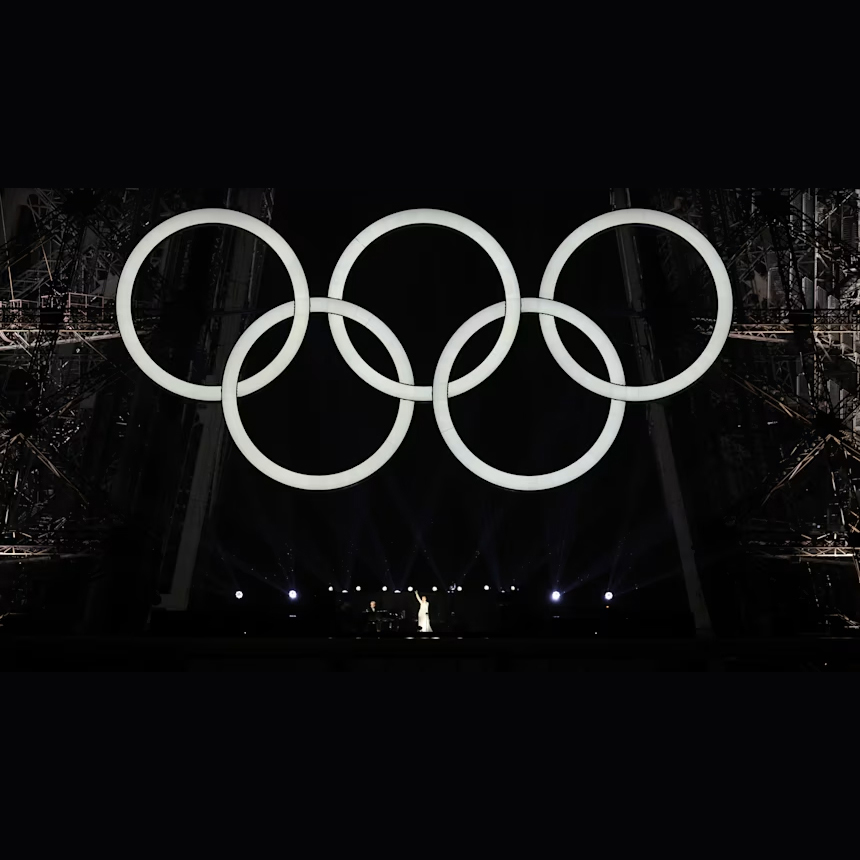

안녕하세요 라보엠입니다.
지난 파리 올림픽의 시작을 알리는 개회식은 올림픽 스타디움이 아닌 아름다운 파리의 전역에서 파격적인 무대를 선보였습니다. 약간의 논란도 있었지만, 마지막 무대로 셀린 디온이 에펠탑에서 에디뜨 피아프의 사랑의 찬가 (Hymne A L'amour)를 부르며 개막식의 마무리를 장식했습니다. 셀린 디온은 근육이 굳는 희소병으로 월드 투어도 취소한 상황에서 투혼을 불태우며 세계 많은 사람들에게 감동을 주었습니다.
셀린 디온 Céline Dion - 사랑의 찬가 (Hymne A L'amour)
사랑의 찬가 (Hymne A L'amour) - 가사
Le ciel bleu sur nous peut s'effondrer
Et la Terre peut bien s'écrouler
Peu m'importe si tu m'aimes
Je me fous du monde entier
Tant qu'l'amour innondera mes matins
Tant qu'mon corps frémira sous tes mains
Peu m'importe les problèmes
Mon amour, puisque tu m'aimes
J'irais jusqu'au bout du monde
Je me ferais teindre en blonde
Si tu me le demandais
J'irais décrocher la Lune
J'irais voler la fortune
Si tu me le demandais
Je renierais ma patrie
Je renierais mes amis
Si tu me le demandais
On peut bien rire de moi
Je ferais n'importe quoi
Si tu me le demandais
Si un jour, la vie t'arrache à moi
Si tu meurs, que tu sois loin de moi
Peu m'importe si tu m'aimes
Car moi je mourrais aussi
Nous aurons pour nous l'éternité
Dans le bleu de toute l'immensité
Dans le ciel, plus de problème
Mon amour, crois-tu qu'on s'aime?
Dieu réunit ceux qui s'aiment
사랑의 찬가 (Hymne A L'amour) 정보
한국에서는 영화 라비앙 로즈와 영화 인셉션에서 꿈을 자각하는 킥 음악으로 사용되며 많은 인기를 얻은 에디트 피아프의 1950년 노래입니다. 권투선수였던 그녀의 연인이 비행기 사고로 죽자 절실한 마음을 담아 만든 노래입니다. 가사에도 죽음을 넘어선 사랑의 의지가 담겨져 있습니다.
푸른 하늘이 우리들 위에 무너져 내려앉을지 모르고,
대지가 허물어질지 모른다 해도,
만약 당신이 나를 사랑해 주신다면
그런 것은 아무래도 좋아요.
사랑이 매일 아침
내 마음에 넘쳐 흐르고,
내 몸이 당신의 손 아래서 떨고 있는 한,
세상 모든 것은 아무래도 좋아요.
나에게 있어서는 그런 건
중대한 문제도,
대단한 일도 아니에요.
당신이 사랑해 주시는 걸요······.
출처 : [네이버 지식백과] 사랑의 찬가 [Hymne A L’amour]
(이야기 팝송 여행 & 이
야기 샹송칸초네 여행, 1995. 5. 1., 삼호뮤직)
